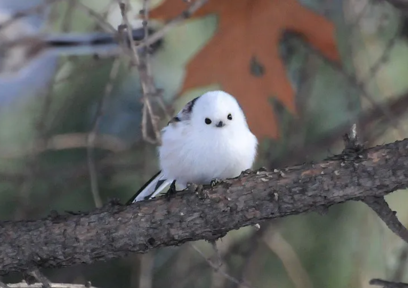

오목눈이는 참새목 오목눈이과에 속하는 조류이다. 공통적으로 성체의 전장(부리 끝에서 꼬리 깃 끝까지의 길이)이 14cm밖에 되지 않는다. 또한 흰머리오목눈이를 제외한 오목눈이들은 머리에 세로로 네개의 검은 줄이 있다. 몸보다 꽁지의 길이가 더 길며, 부드러운 곡선을 그리며 비행한다.

작은 무리를 지어 다닐 때도 있으나 대개는 20마리 정도가 무리지어 다니며, "씨르르 씨르르르-, 찌 지 지-" 거리면서 시끄럽게 지저귀고 다니는 습성이 있다.평소에는 곤충을 먹고 살며, 곤충의 개체 수가 상대적으로 줄어드는 계절인 가을 및 겨울에는 씨앗을 먹으며 지낼 때도 있다. 육추를 하거나 집을 지을 때 암수 한 마리씩 말고도 다른 오목눈이가 도와주기도 한다.
몸이 가늘고 꽁지가 길며 붉은머리오목눈이와 달리 머리, 날개 위쪽, 부리와 꼬리, 발은 검은 갈색이며 배부분은 흰색이다. 또한 눈 사이는 흰색이고 목 위에서 부리까지 검은 선이 있다. 유라시아 대륙 전역에 살며 북부 유럽이나 일본에서도 존재하지만 국내에서는 제주에만 존재하고 그 수도 적기 때문에 흰머리오목눈이와 마찬가지로 정보가 많지 않다. 눈 위에 있는 검은선이 눈썹처럼 보여서 귀여운 외모다.